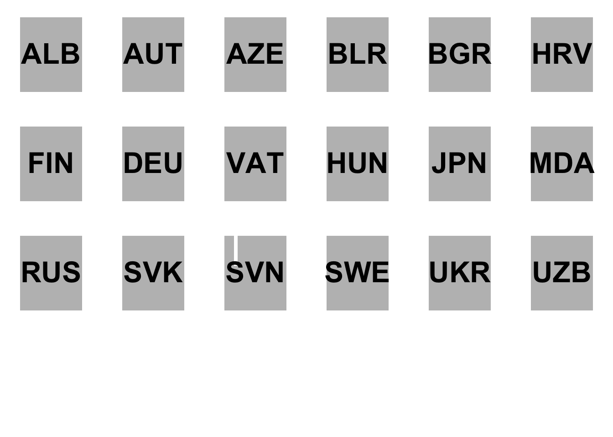

Chapter 4 Dataframe
4.1 基本操作
4.1.1 產生新的Dataframe
4.1.1.1 建立資料並Assign給vector
用以下ChatGPT問句來產生測試資料「我現在正在準備R的教學範例， 請協助我產生台北市所有行政區的資料，包含行政區名、面積、人口數 分別指給town, area, population三個變數」。
town = c("松山區", "信義區", "大安區", "中山區", "中正區", "大同區", "萬華區", "文山區", "南港區", "內湖區", "士林區", "北投區")
area = c(9.2878, 11.2077, 11.3614, 13.6821, 7.6071, 5.6815, 8.8522, 31.5090, 21.8424, 31.5787, 62.3682, 56.8216) # 單位：平方公里
population = c(206375, 225561, 309835, 203276, 159608, 132397, 194160, 275207, 122103, 287726, 288324, 255688) # 2023年的估計值4.1.1.2 合併等長vector為dataframe
## 'data.frame': 6 obs. of 4 variables:
## $ town : chr "中正" "大同" "中山" "松山" ...
## $ population: num 158228 126687 228075 204903 308383 ...
## $ area : num 7.61 5.68 13.68 9.29 11.36 ...
## $ density : num 20800 22298 16670 22062 27143 ...## town population area density
## Length:6 Min. :126687 Min. : 5.681 Min. :16670
## Class :character 1st Qu.:165651 1st Qu.: 7.918 1st Qu.:20907
## Mode :character Median :196412 Median : 9.070 Median :21645
## Mean :202366 Mean : 9.412 Mean :21700
## 3rd Qu.:222282 3rd Qu.:10.843 3rd Qu.:22239
## Max. :308383 Max. :13.682 Max. :271434.1.1.3 存放台灣貿易各國進出口量
- 運用國際貿易署貿易統計系統 (trade.gov.tw)獲取臺灣進出口貿易資料。
country <- c("CN", "US", "JP", "HK", "KR", "SG", "DE", "MY", "VN", "PH", "TH", "AU", "NL", "SA", "ID", "GB", "IN", "FR", "IT", "AE")
import <- c(26.142, 12.008, 7.032, 13.646, 4.589, 5.768, 2.131, 2.802, 3.428, 3.019, 1.976, 1.118, 1.624, 0.449, 0.983, 1.302, 1.027, 0.553, 0.670, 0.455)
export <- c(22.987, 12.204, 11.837, 7.739, 5.381, 4.610, 2.866, 2.784, 2.414, 2.092, 1.839, 1.788, 1.665, 1.409, 1.391, 1.075, 0.974, 0.899, 0.800, 0.728)4.1.1.4 合併vector為data.frame
當我們讀取或創建資料框架時，過去R預設會將字符串類型的變數轉換為因子（Factors），這對於統計分析而言是有益的，因為統計分析經常將文字型態的數據視為類別變數來處理。然而，隨著資料科學領域的快速發展，需要處理大量文字數據的情況日益增多，這時將文字資料預設為因子型態可能不再適合所有情境。因此，現在R的預設的處理方式已經改變，預設將文字型態的變數保持為字符型態（Character），而不是自動將其轉換為因子。這意味著，當我們使用read.csv等函數讀取數據時，除非明確指定，否則讀入的字符串不會自動轉換為Factors型態。
如果你在進行統計分析時希望將文字型態的變數作為類別變數（即因子）處理，你需要手動設定stringsAsFactors參數為TRUE。這可以在讀取數據時（如使用read.csv函數）或在數據處理過程中明確進行轉換。例如，當使用read.csv讀取CSV文件時，若想將所有的字符串變數自動轉為因子型態，可以這樣做：df <- read.csv("your_file.csv", stringsAsFactors = TRUE)。若已經讀取數據且數據框架中的文字型態變數仍為Character型態，而你希望將其轉換為Factors，可以使用factor函數進行轉換：df$your_column <- factor(df$your_column)。
## 'data.frame': 20 obs. of 3 variables:
## $ country: Factor w/ 20 levels "AE","AU","CN",..: 3 19 11 7 12 17 4 13 20 15 ...
## $ import : num 26.14 12.01 7.03 13.65 4.59 ...
## $ export : num 22.99 12.2 11.84 7.74 5.38 ...## 'data.frame': 20 obs. of 3 variables:
## $ country: chr "CN" "US" "JP" "HK" ...
## $ import : num 26.14 12.01 7.03 13.65 4.59 ...
## $ export : num 22.99 12.2 11.84 7.74 5.38 ...其他功能：建立一個新且空的data.frame。
4.1.2 觀察dataframe
當我們處理數據框架（dataframe）時，有幾種常用的方法可以幫助我們更好地了解和觀察數據的結構和內容。
View(df): 使用RStudio提供的圖形使用者介面直接觀看dataframe。這個功能允許你直觀地瀏覽整個數據集，方便地查看不同行（變數）和列（觀測值）。這對於初步瞭解數據的分佈和檢查數據的格式特別有用。head(df): 這個函數用於取出數據框架的前六筆資料（也就是前六列）。這可以讓我們快速概覽數據集的開頭部分，了解數據的基本結構和內容。如果需要查看更多或更少的列，可以向head函數傳遞一個額外的參數，如head(df, n = 10)來查看前十列。class(df): 此函數返回該變數的類型。對於dataframe，它將返回”DataFrame”，表明該對象是一個dataframe。了解對象的類型是重要的基礎步驟，尤其是在R中，不同類型的變項能夠做的操作和應用的函數也不同。str(df):str是結構（structure）的縮寫，這個函數提供了dataframe的詳細結構信息，包括變項的數量、變項名稱、變項數據類型以及每個變項前幾個值。這是一個非常強大的函數，用於深入了解數據集的內部結構，特別是當處理大型數據集時。summary(df): 此函數提供了數據框架的摘要統計信息，包括數值變數的最小值、最大值、中位數、平均值、第一四分位數和第三四分位數，以及因子變數的水平計數。這對於快速獲取數據集的統計概述非常有用。
## country import export
## 1 CN 26.142 22.987
## 2 US 12.008 12.204
## 3 JP 7.032 11.837
## 4 HK 13.646 7.739
## 5 KR 4.589 5.381
## 6 SG 5.768 4.610## [1] "data.frame"## 'data.frame': 20 obs. of 3 variables:
## $ country: chr "CN" "US" "JP" "HK" ...
## $ import : num 26.14 12.01 7.03 13.65 4.59 ...
## $ export : num 22.99 12.2 11.84 7.74 5.38 ...## country import export
## Length:20 Min. : 0.449 Min. : 0.728
## Class :character 1st Qu.: 1.016 1st Qu.: 1.312
## Mode :character Median : 2.054 Median : 1.966
## Mean : 4.536 Mean : 4.374
## 3rd Qu.: 4.884 3rd Qu.: 4.803
## Max. :26.142 Max. :22.9874.1.3 操作dataframe
4.1.3.1 取出一個變項
names(df)列出變數名稱df$發生.現.地點顯示該變數內容df$發生時段顯示該變數內容length(df$發生時段)顯示該變數的長度（相當於有幾個）
## [1] "country" "import" "export"## [1] 22.987 12.204 11.837 7.739 5.381 4.610## [1] 20## country import export
## Length:20 Min. : 0.449 Min. : 0.728
## Class :character 1st Qu.: 1.016 1st Qu.: 1.312
## Mode :character Median : 2.054 Median : 1.966
## Mean : 4.536 Mean : 4.374
## 3rd Qu.: 4.884 3rd Qu.: 4.803
## Max. :26.142 Max. :22.9874.1.3.2 (mutate)透過運算產生新變數
- 這裡容易犯錯的是，要記得跟程式講說你要加總或四則運算的是哪個df的variable。
- 從下面的這個操作中，該data.frame會產生一個新的變數
sub，這就相當於Excel中的某一行減去某一行，然後把資料放在新的一行。
4.1.3.3 (filter)篩選資料、選取變數
注意，要告訴程式
import和export是哪個data.frame的。df[,]為存取df中某個區段的數值或某個數值的方法。因此df[1, 1]會取出第一行第一列，也就是第一筆資料的第一個vector。df[2, 3]則會取出第二筆資料的第三個variable。下面的例子
nrow(df)為1894，有1894筆資料，所以自然df\(import與df\)export的長度都是1894。因此，比較這兩個變數的大小會得到一個長度為1894的boolean (logical) variable。因此把這個長度為1894、充滿TRUE和FALSE的logical vector丟進df的row之處，因為取自df，大小判斷式結果的長度自然和原本的df的列數相同。因此當這個TRUE/FALSE被丟在df的列之處，便會篩選出import大於p.xport的數值。原本的df有五個variable，而上述的操作是篩選資料，所以被篩選的是列，因此行的數量、名稱都不會變。因此，我篩選完後，直接存取這個被篩選過的data.frame的country variable，自然是可以的。
## country import export sub
## 1 CN 26.142 22.987 3.155
## 2 US 12.008 12.204 -0.196
## 3 JP 7.032 11.837 -4.805
## 4 HK 13.646 7.739 5.907
## 5 KR 4.589 5.381 -0.792
## 6 SG 5.768 4.610 1.158
## 7 DE 2.131 2.866 -0.735
## 8 MY 2.802 2.784 0.018
## 9 VN 3.428 2.414 1.014
## 10 PH 3.019 2.092 0.927
## 11 TH 1.976 1.839 0.137
## 12 AU 1.118 1.788 -0.670
## 13 NL 1.624 1.665 -0.041
## 14 SA 0.449 1.409 -0.960
## 15 ID 0.983 1.391 -0.408
## 16 GB 1.302 1.075 0.227
## 17 IN 1.027 0.974 0.053
## 18 FR 0.553 0.899 -0.346
## 19 IT 0.670 0.800 -0.130
## 20 AE 0.455 0.728 -0.273## [1] "country" "import" "export" "sub"## [1] 20## country import export sub
## 1 CN 26.142 22.987 3.155
## 4 HK 13.646 7.739 5.907
## 6 SG 5.768 4.610 1.158
## 8 MY 2.802 2.784 0.018
## 9 VN 3.428 2.414 1.014
## 10 PH 3.019 2.092 0.927
## 11 TH 1.976 1.839 0.137
## 16 GB 1.302 1.075 0.227
## 17 IN 1.027 0.974 0.053## [1] "CN" "HK" "SG" "MY" "VN" "PH" "TH" "GB" "IN"## [1] "CN" "HK" "SG" "MY" "VN" "PH" "TH" "GB" "IN"## [1] "character"## [1] "character"## [1] "data.frame"## [1] "numeric"4.1.3.4 (arrange) 按某個變數排序
df.sorted <- df[order(df$import),]會使得整個df照import的大小排序重新做排列。因為order(df$import)會把資料照指定順序排列後的位置傳回來，所以把他丟給df的列的位置，便會使得df的資料照指定的順序排列。 預設是由小到大，加上decreasing = T這個參數後變成由大而小。
# sort rows by df$import column
df.sorted <- df[order(df$import),]
# View(df.sorted)
# sort rows in decreasing order
df.sorted <- df[order(df$import, decreasing = T),]
# add - to column in order() can sort in decreasing order
df.sorted <- df[order(-df$import),]
head(df.sorted)## country import export sub
## 1 CN 26.142 22.987 3.155
## 4 HK 13.646 7.739 5.907
## 2 US 12.008 12.204 -0.196
## 3 JP 7.032 11.837 -4.805
## 6 SG 5.768 4.610 1.158
## 5 KR 4.589 5.381 -0.7924.2 簡易繪圖
graphics::plot()為會預載入R的繪圖套件，如果希望繪圖的同時加上回歸線和資料點標籤的話，必須要三行一起執行。

plot(df[1:10, 2:3])
text(import, export, labels=country, cex= 0.5, pos=3)
lines(1:25, 1:25, col='red')
## Help on topic 'plot' was found in the following packages:
##
## Package Library
## graphics /Library/Frameworks/R.framework/Versions/4.3-arm64/Resources/library
## base /Library/Frameworks/R.framework/Resources/library
##
##
## Using the first match ...4.3 延伸學習
4.3.1 使用dplyr
library(dplyr)
df <- data.frame(country, import, export, stringsAsFactors = F)
df <- mutate(df, sub = import - export)
filter(df, import > export)## country import export sub
## 1 CN 26.142 22.987 3.155
## 2 HK 13.646 7.739 5.907
## 3 SG 5.768 4.610 1.158
## 4 MY 2.802 2.784 0.018
## 5 VN 3.428 2.414 1.014
## 6 PH 3.019 2.092 0.927
## 7 TH 1.976 1.839 0.137
## 8 GB 1.302 1.075 0.227
## 9 IN 1.027 0.974 0.053## country export
## 1 CN 22.987
## 2 US 12.204
## 3 JP 11.837
## 4 HK 7.739
## 5 KR 5.381
## 6 SG 4.610
## 7 DE 2.866
## 8 MY 2.784
## 9 VN 2.414
## 10 PH 2.092
## 11 TH 1.839
## 12 AU 1.788
## 13 NL 1.665
## 14 SA 1.409
## 15 ID 1.391
## 16 GB 1.075
## 17 IN 0.974
## 18 FR 0.899
## 19 IT 0.800
## 20 AE 0.728## [1] "CN" "US" "JP" "HK" "KR" "SG" "DE" "MY" "VN" "PH" "TH" "AU" "NL" "SA" "ID"
## [16] "GB" "IN" "FR" "IT" "AE"4.4 Paid Maternity Leave
本案例將使用R重新製作華盛頓郵報2016年8月13日的一篇報導，該報導探討了美國婦女產假支薪情況。案例中將應用data.frame和基本的繪圖與資料摘要方法。
原始新聞來源：The world is getting better at paid maternity leave. The U.S. is not. - The Washington Post。該篇報導提及，美國因為目前的政策不保障帶薪產假，許多女性感到必須在工作和照顧家庭之間做出選擇，這種性別不平等破壞了她們在工作機會上的平等機會。同時，世界各地的婦女待遇正在逐漸改善。至少190個國家對嬰兒的母親規定了某種形式的帶薪假期，產假待遇在56個國家有所提高。專家表示，現在美國城市和州正通過不同形式的帶薪家庭假法案，這顯示美國雇主正在展示有競爭力的福利不會影響員工表現。特別是科技公司，如Twitter、Facebook和Google等，處於提供員工帶薪產假福利的前沿，美國可能有望追趕其他國家。

本案例主要呈現核心的視覺化概念，可以在Review Paid Maternity by dplyr找到更詳盡的案例說明與解析。
4.4.1 Reading .xlsx by readxl package
在進行產假支薪調查數據的分析與視覺化時，我們從該調查網站上所下載的資料是一個Excel文件。由於R語言本身不直接支援讀取Excel格式的文件，我們必須依靠外部的套件來實現這一功能，如readxl套件。它是專門設計來讀取.xls和.xlsx格式文件的強大工具。readxl套件是tidyverse套件集的一部分。tidyverse是一組旨在數據科學和數據處理領域提供便利的R套件集合，包括了ggplot2、dplyr、tidyr等多個流行的套件。如果你之前已經安裝了tidyverse，那麼readxl套件應該也已經安裝在你的系統上，無需進行重複安裝。
然而，即便readxl已經安裝，它並不會隨著tidyverse套件集的其他部分自動加載到R的執行環境中。這意味著，在你打算使用readxl套件來讀取Excel文件之前，需要先手動執行library(readxl)命令來加載它。
這段程式碼使用read_excel()函式從data資料夾中的WORLD-MACHE_Gender_6.8.15.xls檔案中的Sheet1工作表讀取資料。其中col_names=T為該函式的參數，表示第一列為欄位名稱。讀取後的資料會被Assign給變數df。
4.4.2 Previewing data by View(), class(), dim(), str(), summary() and names()
## [1] "tbl_df" "tbl" "data.frame"## [1] 197 156## [1] "country" "iso2" "iso3"
## [4] "region" "wb_econ" "matleave_95"
## [7] "matleave_96" "matleave_97" "matleave_98"
## [10] "matleave_99" "matleave_00" "matleave_01"
## [13] "matleave_02" "matleave_03" "matleave_04"
## [16] "matleave_05" "matleave_06" "matleave_07"
## [19] "matleave_08" "matleave_09" "matleave_10"
## [22] "matleave_11" "matleave_12" "matleave_13"
## [25] "matleave_wrr_95" "matleave_wrr_96" "matleave_wrr_97"
## [28] "matleave_wrr_98" "matleave_wrr_99" "matleave_wrr_00"
## [31] "matleave_wrr_01" "matleave_wrr_02" "matleave_wrr_03"
## [34] "matleave_wrr_04" "matleave_wrr_05" "matleave_wrr_06"
## [37] "matleave_wrr_07" "matleave_wrr_08" "matleave_wrr_09"
## [40] "matleave_wrr_10" "matleave_wrr_11" "matleave_wrr_12"
## [43] "matleave_wrr_13" "bf_dur_95" "bf_dur_96"
## [46] "bf_dur_97" "bf_dur_98" "bf_dur_99"
## [49] "bf_dur_00" "bf_dur_01" "bf_dur_02"
## [52] "bf_dur_03" "bf_dur_04" "bf_dur_05"
## [55] "bf_dur_06" "bf_dur_07" "bf_dur_08"
## [58] "bf_dur_09" "bf_dur_10" "bf_dur_11"
## [61] "bf_dur_12" "bf_dur_13" "mat_bfeed_6mon_95"
## [64] "mat_bfeed_6mon_96" "mat_bfeed_6mon_97" "mat_bfeed_6mon_98"
## [67] "mat_bfeed_6mon_99" "mat_bfeed_6mon_00" "mat_bfeed_6mon_01"
## [70] "mat_bfeed_6mon_02" "mat_bfeed_6mon_03" "mat_bfeed_6mon_04"
## [73] "mat_bfeed_6mon_05" "mat_bfeed_6mon_06" "mat_bfeed_6mon_07"
## [76] "mat_bfeed_6mon_08" "mat_bfeed_6mon_09" "mat_bfeed_6mon_10"
## [79] "mat_bfeed_6mon_11" "mat_bfeed_6mon_12" "mat_bfeed_6mon_13"
## [82] "minage_fem_leg_95" "minage_fem_leg_96" "minage_fem_leg_97"
## [85] "minage_fem_leg_98" "minage_fem_leg_99" "minage_fem_leg_00"
## [88] "minage_fem_leg_01" "minage_fem_leg_02" "minage_fem_leg_03"
## [91] "minage_fem_leg_04" "minage_fem_leg_05" "minage_fem_leg_06"
## [94] "minage_fem_leg_07" "minage_fem_leg_08" "minage_fem_leg_09"
## [97] "minage_fem_leg_10" "minage_fem_leg_11" "minage_fem_leg_12"
## [100] "legal_diff_leg_95" "legal_diff_leg_96" "legal_diff_leg_97"
## [103] "legal_diff_leg_98" "legal_diff_leg_99" "legal_diff_leg_00"
## [106] "legal_diff_leg_01" "legal_diff_leg_02" "legal_diff_leg_03"
## [109] "legal_diff_leg_04" "legal_diff_leg_05" "legal_diff_leg_06"
## [112] "legal_diff_leg_07" "legal_diff_leg_08" "legal_diff_leg_09"
## [115] "legal_diff_leg_10" "legal_diff_leg_11" "legal_diff_leg_12"
## [118] "minage_fem_pc_95" "minage_fem_pc_96" "minage_fem_pc_97"
## [121] "minage_fem_pc_98" "minage_fem_pc_99" "minage_fem_pc_00"
## [124] "minage_fem_pc_01" "minage_fem_pc_02" "minage_fem_pc_03"
## [127] "minage_fem_pc_04" "minage_fem_pc_05" "minage_fem_pc_06"
## [130] "minage_fem_pc_07" "minage_fem_pc_08" "minage_fem_pc_09"
## [133] "minage_fem_pc_10" "minage_fem_pc_11" "minage_fem_pc_12"
## [136] "legal_diff_pc_95" "legal_diff_pc_96" "legal_diff_pc_97"
## [139] "legal_diff_pc_98" "legal_diff_pc_99" "legal_diff_pc_00"
## [142] "legal_diff_pc_01" "legal_diff_pc_02" "legal_diff_pc_03"
## [145] "legal_diff_pc_04" "legal_diff_pc_05" "legal_diff_pc_06"
## [148] "legal_diff_pc_07" "legal_diff_pc_08" "legal_diff_pc_09"
## [151] "legal_diff_pc_10" "legal_diff_pc_11" "legal_diff_pc_12"
## [154] "minwage_ppp_2013" "mw_overtime" "oecd"4.4.3 Select variables
由於所需要的資料為第三欄的變數iso3（為國家代碼）和第六至24欄的matleave95~matleave13共29年的資料，所以需要在df[ , ]中選出這幾欄。只要把所要取的欄以vector的型態放在df[row,col]之col的位置，便可以選出所要的欄。
# Select the 3rd and 6th to 24th columns
matleave <- df[ , c(3, 6:24)]
# Use class(), dim(), and str() to inspect the data
class(matleave)## [1] "tbl_df" "tbl" "data.frame"## [1] 197 20## tibble [197 × 20] (S3: tbl_df/tbl/data.frame)
## $ iso3 : chr [1:197] "AFG" "ALB" "DZA" "AND" ...
## $ matleave_95: num [1:197] 2 5 3 2 2 2 2 3 1 5 ...
## $ matleave_96: num [1:197] 2 5 3 2 2 2 2 3 1 5 ...
## $ matleave_97: num [1:197] 2 5 3 2 2 2 2 3 1 5 ...
## $ matleave_98: num [1:197] 2 5 3 2 2 2 2 3 1 5 ...
## $ matleave_99: num [1:197] 2 5 3 2 2 2 2 3 1 5 ...
## $ matleave_00: num [1:197] 2 5 3 3 2 2 2 3 1 5 ...
## $ matleave_01: num [1:197] 2 5 3 3 2 2 2 3 1 5 ...
## $ matleave_02: num [1:197] 2 5 3 3 2 2 2 3 1 5 ...
## $ matleave_03: num [1:197] 2 5 3 3 2 2 2 3 1 5 ...
## $ matleave_04: num [1:197] 2 5 3 3 2 2 2 5 1 5 ...
## $ matleave_05: num [1:197] 2 5 3 3 2 2 2 5 1 5 ...
## $ matleave_06: num [1:197] 2 5 3 3 2 2 2 5 1 5 ...
## $ matleave_07: num [1:197] 2 5 3 3 2 2 2 5 1 5 ...
## $ matleave_08: num [1:197] 2 5 3 3 2 2 2 5 1 5 ...
## $ matleave_09: num [1:197] 2 5 3 3 2 2 2 5 1 5 ...
## $ matleave_10: num [1:197] 2 5 3 3 2 2 2 5 NA 5 ...
## $ matleave_11: num [1:197] 2 5 3 3 2 2 2 5 3 5 ...
## $ matleave_12: num [1:197] 2 5 3 3 2 2 2 5 3 5 ...
## $ matleave_13: num [1:197] 2 5 3 3 2 2 2 5 3 5 ...4.4.4 Check & Replace NAs
- 處理開放資料常常會遇到紀錄遺漏的情形，這些遺漏的值在R語言中通常以
NA（Not Available）來表示。這種情況很常見，特別是當數據來自於廣泛的來源，如網絡調查或公開資料庫時。適當處理這些NA值對於維持分析的準確性和可靠性至關重要。 - 為了識別和處理這些
NA值，R提供了一些有用的函數和技巧。例如，is.na(v)函數可以用來檢測向量v中的NA值。如果你想選擇所有的NA紀錄，可以使用v[is.na(v)]這樣的語法。這個表達式會傳回所有在向量v中為NA的元素，這對於進一步的分析和資料清洗非常有幫助。 - 在某些情況下，你可能會想要以某個特定值來取代
NA值，以避免在繪圖或進行其他數據分析時產生錯誤。例如，你可以選擇以0來取代所有的NA值，這可以通過v[is.na(v)] <- 0來實現。這樣，所有原本為NA的資料格都會被賦予0值。 - 此外，
sum(is.na(v))這個表達式可以用來檢測向量v中還有多少NA值。這個函數的運作機制是計算所有is.na(v)為TRUE的情況，即所有NA值的總數。如果這個結果不是0，那麼就表示在向量或dataframe中還存在NA值。這對於確保數據清理工作已經完成，並且數據集準備好進行分析是非常有用的。
## iso3 matleave_95 matleave_96 matleave_97 matleave_98 matleave_99
## [1,] FALSE FALSE FALSE FALSE FALSE FALSE
## [2,] FALSE FALSE FALSE FALSE FALSE FALSE
## [3,] FALSE FALSE FALSE FALSE FALSE FALSE
## [4,] FALSE FALSE FALSE FALSE FALSE FALSE
## [5,] FALSE FALSE FALSE FALSE FALSE FALSE
## [6,] FALSE FALSE FALSE FALSE FALSE FALSE
## [7,] FALSE FALSE FALSE FALSE FALSE FALSE
## [8,] FALSE FALSE FALSE FALSE FALSE FALSE
## [9,] FALSE FALSE FALSE FALSE FALSE FALSE
## [10,] FALSE FALSE FALSE FALSE FALSE FALSE
## [11,] FALSE FALSE FALSE FALSE FALSE FALSE
## [12,] FALSE FALSE FALSE FALSE FALSE FALSE
## [13,] FALSE FALSE FALSE FALSE FALSE FALSE
## [14,] FALSE FALSE FALSE FALSE FALSE FALSE
## [15,] FALSE FALSE FALSE FALSE FALSE FALSE
## [16,] FALSE FALSE FALSE FALSE FALSE FALSE
## [17,] FALSE FALSE FALSE FALSE FALSE FALSE
## [18,] FALSE FALSE FALSE FALSE FALSE FALSE
## [19,] FALSE FALSE FALSE FALSE FALSE FALSE
## [20,] FALSE FALSE FALSE FALSE FALSE FALSE
## matleave_00 matleave_01 matleave_02 matleave_03 matleave_04 matleave_05
## [1,] FALSE FALSE FALSE FALSE FALSE FALSE
## [2,] FALSE FALSE FALSE FALSE FALSE FALSE
## [3,] FALSE FALSE FALSE FALSE FALSE FALSE
## [4,] FALSE FALSE FALSE FALSE FALSE FALSE
## [5,] FALSE FALSE FALSE FALSE FALSE FALSE
## [6,] FALSE FALSE FALSE FALSE FALSE FALSE
## [7,] FALSE FALSE FALSE FALSE FALSE FALSE
## [8,] FALSE FALSE FALSE FALSE FALSE FALSE
## [9,] FALSE FALSE FALSE FALSE FALSE FALSE
## [10,] FALSE FALSE FALSE FALSE FALSE FALSE
## [11,] FALSE FALSE FALSE FALSE FALSE FALSE
## [12,] FALSE FALSE FALSE FALSE FALSE FALSE
## [13,] FALSE FALSE FALSE FALSE FALSE FALSE
## [14,] FALSE FALSE FALSE FALSE FALSE FALSE
## [15,] FALSE FALSE FALSE FALSE FALSE FALSE
## [16,] FALSE FALSE FALSE FALSE FALSE FALSE
## [17,] FALSE FALSE FALSE FALSE FALSE FALSE
## [18,] FALSE FALSE FALSE FALSE FALSE FALSE
## [19,] FALSE FALSE FALSE FALSE FALSE FALSE
## [20,] FALSE FALSE FALSE FALSE FALSE FALSE
## matleave_06 matleave_07 matleave_08 matleave_09 matleave_10 matleave_11
## [1,] FALSE FALSE FALSE FALSE FALSE FALSE
## [2,] FALSE FALSE FALSE FALSE FALSE FALSE
## [3,] FALSE FALSE FALSE FALSE FALSE FALSE
## [4,] FALSE FALSE FALSE FALSE FALSE FALSE
## [5,] FALSE FALSE FALSE FALSE FALSE FALSE
## [6,] FALSE FALSE FALSE FALSE FALSE FALSE
## [7,] FALSE FALSE FALSE FALSE FALSE FALSE
## [8,] FALSE FALSE FALSE FALSE FALSE FALSE
## [9,] FALSE FALSE FALSE FALSE TRUE FALSE
## [10,] FALSE FALSE FALSE FALSE FALSE FALSE
## [11,] FALSE FALSE FALSE FALSE FALSE FALSE
## [12,] FALSE FALSE FALSE FALSE FALSE FALSE
## [13,] FALSE FALSE FALSE FALSE FALSE FALSE
## [14,] FALSE FALSE FALSE FALSE FALSE FALSE
## [15,] FALSE FALSE FALSE FALSE FALSE FALSE
## [16,] FALSE FALSE FALSE FALSE FALSE FALSE
## [17,] FALSE FALSE FALSE FALSE FALSE FALSE
## [18,] FALSE FALSE FALSE FALSE FALSE FALSE
## [19,] FALSE FALSE FALSE FALSE FALSE FALSE
## [20,] FALSE TRUE TRUE FALSE FALSE FALSE
## matleave_12 matleave_13
## [1,] FALSE FALSE
## [2,] FALSE FALSE
## [3,] FALSE FALSE
## [4,] FALSE FALSE
## [5,] FALSE FALSE
## [6,] FALSE FALSE
## [7,] FALSE FALSE
## [8,] FALSE FALSE
## [9,] FALSE FALSE
## [10,] FALSE FALSE
## [11,] FALSE FALSE
## [12,] FALSE FALSE
## [13,] FALSE FALSE
## [14,] FALSE FALSE
## [15,] FALSE FALSE
## [16,] FALSE FALSE
## [17,] FALSE FALSE
## [18,] FALSE FALSE
## [19,] FALSE FALSE
## [20,] FALSE FALSE# Assign 0 to those NA data
matleave[is.na(matleave)] <- 0
# anyNA() to check if there are still NA cells.
anyNA(matleave)## [1] FALSE## [1] 04.4.5 Filtering data
4.4.5.1 Filtered by the last year value
matleave[matleave$'matleave_13'==5, ]中的第一個matleave表示要篩選的資料集，中括號中的matleave$'matleave_13'==5是篩選條件，表示將篩選matleave資料集中的matleave_13變數值等於5的列；中括號中的逗號後方未有欄位名稱表示將保留所有欄位（變項），僅篩選出符合條件的列，並將篩選後所產生的dataframe指給變數m5。
# Use logical comparison to see if the last year equals to 5
# Assign matching data to var m5
m5 <- matleave[matleave$'matleave_13'==5, ]
# nrow() to count matching data
nrow(m5)## [1] 344.4.6 Plotting
- 當我們在R中進行資料視覺化時，理解資料結構對於正確使用圖形化函數是非常重要的。以
matleave資料集為例，如果我們想要繪製其第二列所有行（除了第一行）的條形圖，這裡有一段示範程式碼及相關的概念解釋。 - 首先，為何要除去第一行？因為第一行為國家名稱。所以我們利用
class(matleave[2, -1])來查看matleave資料集第二行和除了第一列外所有列的資料類型。這個操作返回的是一個data.frame的資料類型，因為即使是單一行的選取，R仍然保持了資料的data.frame結構。 - 然而，當我們嘗試使用
barplot()函數繪製長條圖時，就不能直接把data.frame給barplot()進行繪製。。這是因為barplot()函數期望的輸入是一個vector。因此，我們使用unlist(matleave[2, -1])將單行的data.frame轉換成vector。unlist()函數的作用是將一個列表（或在這個案例中是data.frame）中的所有元素合併成一個vector，這樣就可以用於barplot()。 - 為了進一步理解這種差異，我們可以使用
class()或str()函數來觀察未經unlist()處理的資料。這將顯示出資料仍然保留在data.frame結構中，與unlist()後轉換為vector的結構有顯著的不同。這種轉換對於使用某些特定的繪圖函數，如barplot()，是必要的，因為它們需要一個vector作為輸入來正確地繪製圖形。
4.4.6.1 Plotting one row (one country)
# barplot() the second row of m55
# barplot(m55[2, ]) # raise error
# barplot() the second row when neglecting the first column
# barplot(m55[2, -1]) # raise error
# Take a look at the data type of matleave[2, ]
class(matleave[2, -1])## [1] "tbl_df" "tbl" "data.frame"## [1] "numeric"
Testing
# View(matleave[1]) # select the 1st variable
# View(matleave[ ,1]) # select the 1st column
# View(matleave[1, ]) # select the 1st row
class(m55[1]) # "tbl_df" "tbl" "data.frame"## [1] "tbl_df" "tbl" "data.frame"## [1] "tbl_df" "tbl" "data.frame"## [1] "tbl_df" "tbl" "data.frame"## [1] "character"4.4.6.2 More arguments (args)
接下來我們要微調一下視覺化的結果。這行程式碼使用R中的barplot函數繪製一個長條圖，其中的參數說明如下：
unlist(m55[2, -1]): 將m55資料集的第2行（不包括第1欄）轉換為一個向量，並作為長條圖的高度（即每個長條的高度）。ylim=c(0, 5): 設置y軸的範圍為0到5，即長條圖的最大高度為5。space=0: 設置相鄰兩個長條之間的距離為0，即長條緊密相連。border=NA: 設置長條的邊框為透明，即不顯示邊框。xaxt="n": 不顯示x軸的標籤。yaxt="n": 不顯示y軸的標籤。

# use ?barplot to know more argument of the function.
?barplot
# Add arguments ylim, space, border, and axat/yaxt one by one to barplot()
barplot(unlist(m55[2, -1]), ylim=c(0, 5))


4.4.6.3 Plotting multiple lines
我們已經成功繪製了一個國家的資料，接下來我們要繪出所有國家的資料。以m55這個篩選後的資料為例，我分別要繪製出第1列至第6列的國家。底下可以看見每一行非常相似且一致的特徵，僅有matleave內的索引由1被列出至6。對於這種重複的程式碼，最好的方法是用迴圈（for-loop）的方式將相同的程式碼，從1~6之間做六次。
# plot the first row
barplot(unlist(m55[1, -1]), ylim=c(0, 5), space=0, border=NA, xaxt="n", yaxt="n")
# plot the second to 6th rows
barplot(unlist(m55[2, -1]), ylim=c(0, 5), space=0, border=NA, xaxt="n", yaxt="n")
barplot(unlist(m55[3, -1]), ylim=c(0, 5), space=0, border=NA, xaxt="n", yaxt="n")
barplot(unlist(m55[4, -1]), ylim=c(0, 5), space=0, border=NA, xaxt="n", yaxt="n")
barplot(unlist(m55[5, -1]), ylim=c(0, 5), space=0, border=NA, xaxt="n", yaxt="n")
barplot(unlist(m55[6, -1]), ylim=c(0, 5), space=0, border=NA, xaxt="n", yaxt="n")4.4.6.4 for-loop to plot multiple lines
這段R語言程式碼使用for-loop來重複執行一個指定的程式區塊，將m55資料集的前六行資料分別繪製成長條圖。在這段程式碼中，變數i控制了for-loop的迭代次數，它從1到6依次取值，然後依次執行所指定的程式區塊。
一般的for-loop的結構如下：for (variable in sequence) {# code block to be executed}。其中，變數variable是用來控制for-loop的迭代次數的，它會從序列sequence中逐一取出元素，並將其賦值給變數variable，然後執行大括號{...}中所指定的程式區塊。
# use for loop and use i as index to barplot multiple subgraphs
for(i in 1:6){
barplot(unlist(m55[i, -1]), ylim=c(0, 5), space=0, border=NA, xaxt="n", yaxt="n")
}

4.4.6.5 Subplots
但這樣一個國家就要畫成一個Plot，如果要將多個國家、也就是多個Plots繪製在同一張圖上的話，R也有支援Subplot的函式與設定。在R語言中，par（parameter的縮寫）是一個用於設置繪圖參數的函數，通過它可以控制繪圖的外觀、尺寸、排列等各方面，以便更好地展示數據和分析結果。par函數可以用來設置以下參數：
mfrow：設置畫布的分割，即將畫布分為多少行和多少列，例如mfrow=c(3,2)代表三列二行。mai：設置畫布的邊緣大小，包括上下左右四個邊緣的大小。cex：設置字體大小的縮放比例。col：設置線條、點和字體的顏色。pch：設置散點圖中點的形狀。lty：設置線條的類型。
在這段程式碼中，par函數被用來設置畫布的分割和邊緣大小，具體來說，par(mfrow=c(3,2), mai= c(0.2, 0.2, 0.2, 0.2))表示將畫布分為3行2列的子圖，並設置邊緣大小為0.2，包括上下左右四個邊緣。這樣可以方便地在同一張畫布上顯示多個圖形，並控制它們之間的排列和間距。
# use ?par to get more plotting parameters
?par
# use par() to set-up the layout of subgraphs
# use the parameter main=c(0.2, 0.2, 0.2, 0.2) to thrink the padding of figures.
par(mfrow=c(3,2), mai= c(0.2, 0.2, 0.2, 0.2))
for(i in 1:6){
barplot(unlist(m55[i, -1]), ylim=c(0, 5), space=0, border=NA, xaxt="n", yaxt="n")
}
接下來我們用相同的for-loop來繪製10張子圖（十個國家）看看。會發現mfrow=c(3,2)可以容納六張子圖，多餘六張子圖時，會繪製至下一張。
# plot more rows to see what happens
par(mfrow=c(3,2), mai= c(0.2, 0.2, 0.2, 0.2))
for(i in 1:10){
barplot(unlist(m55[i, -1]), ylim=c(0, 5), space=0, border=NA, xaxt="n", yaxt="n")
}

最後，我用nrow(m55)來取得m55這個data.frame共有多少個國家，然後，我讓for-loop從1:nrow(m55)相當於繪製完所有m55中的子圖。注意我已經修改了mfrow為mfrow=c(4, 6)。
## [1] 18# use par() to set-up plotting parameters.
par(mfrow=c(4, 6), mai= c(0.2, 0.2, 0.2, 0.2))
# use for-loop to plot all graph as subgraph
for (i in 1:nrow(m55)){
barplot(unlist(m55[i, -1]), border=NA, space=0, xaxt="n", yaxt="n", ylim = c(0,5))
}
在每個子圖上，我要加上每個國家的國別代碼iso3，也就是m55的第一行，我用同樣的i來掃過每一列，繪製完barplot()後，便用title()函式來繪製文字。結果如下。注意我的設定title(m55[i,1], line = -4, cex.main=3)。line為繪製文字的基線，而cex.main是字型大小。
par(mfrow=c(4,6), mai= c(0.2, 0.2, 0.2, 0.2))
for (i in 1:nrow(m55)){
barplot(unlist(m55[i, -1]), border=NA, space=0,xaxt="n", yaxt="n", ylim = c(0,5))
title(m55[i,1], line = -4, cex.main=3)
}
4.4.7 Practice. Plotting more
- 請繪製
m05的資料，也就是matleave_95!=5但matleave_13==5的資料。 - 請繪製
m04的資料，也就是matleave_95!=4但matleave_13==4的資料。 - 請繪製
m44的資料，也就是matleave_95==4但matleave_13==4的資料。
4.4.8 Practice. Selecting and filtering by dplyr I
請嘗試問問ChatGPT，如果將以下程式碼改為dplyr的寫法，要怎麼寫。
df <- read_excel("data/WORLD-MACHE_Gender_6.8.15.xls", "Sheet1", col_names=T)
# select columns by index
# matleave <- df[ , c(3, 6:24)]
# select all NA cells and assign 0 to them
# matleave[is.na(matleave)] <- 0
# filter rows by condition
# m5 <- matleave[matleave$'matleave_13' == 5, ]
# filter rows by condition
# m55<- m5[m5$'matleave_95' == 5,]
# plot
par(mfrow=c(4,6), mai= c(0.2, 0.2, 0.2, 0.2))
for (i in c(1:nrow(m55))){
barplot(unlist(m55[i,-1]),
border=NA, space=0,xaxt="n", yaxt="n", ylim = c(0,5))
title(m55[i,1], line = -4, cex.main=3)
}
4.4.9 (More) Clean version
# readxl::read_excel() to import the xls file
df <- read_excel("data/WORLD-MACHE_Gender_6.8.15.xls", "Sheet1", col_names=T)
# select iso3, and matleave columns by index
matleave <- df[ , c(3, 6:24)]
# str() to inspect the data structure of
str(matleave)## tibble [197 × 20] (S3: tbl_df/tbl/data.frame)
## $ iso3 : chr [1:197] "AFG" "ALB" "DZA" "AND" ...
## $ matleave_95: num [1:197] 2 5 3 2 2 2 2 3 1 5 ...
## $ matleave_96: num [1:197] 2 5 3 2 2 2 2 3 1 5 ...
## $ matleave_97: num [1:197] 2 5 3 2 2 2 2 3 1 5 ...
## $ matleave_98: num [1:197] 2 5 3 2 2 2 2 3 1 5 ...
## $ matleave_99: num [1:197] 2 5 3 2 2 2 2 3 1 5 ...
## $ matleave_00: num [1:197] 2 5 3 3 2 2 2 3 1 5 ...
## $ matleave_01: num [1:197] 2 5 3 3 2 2 2 3 1 5 ...
## $ matleave_02: num [1:197] 2 5 3 3 2 2 2 3 1 5 ...
## $ matleave_03: num [1:197] 2 5 3 3 2 2 2 3 1 5 ...
## $ matleave_04: num [1:197] 2 5 3 3 2 2 2 5 1 5 ...
## $ matleave_05: num [1:197] 2 5 3 3 2 2 2 5 1 5 ...
## $ matleave_06: num [1:197] 2 5 3 3 2 2 2 5 1 5 ...
## $ matleave_07: num [1:197] 2 5 3 3 2 2 2 5 1 5 ...
## $ matleave_08: num [1:197] 2 5 3 3 2 2 2 5 1 5 ...
## $ matleave_09: num [1:197] 2 5 3 3 2 2 2 5 1 5 ...
## $ matleave_10: num [1:197] 2 5 3 3 2 2 2 5 NA 5 ...
## $ matleave_11: num [1:197] 2 5 3 3 2 2 2 5 3 5 ...
## $ matleave_12: num [1:197] 2 5 3 3 2 2 2 5 3 5 ...
## $ matleave_13: num [1:197] 2 5 3 3 2 2 2 5 3 5 ...# select all NA cells and assign 0 to them
matleave[is.na(matleave)] <- 0
# filter rows by condition
m5 <- matleave[matleave$'matleave_13' == 5, ]
# filter rows by condition
m55<- m5[m5$'matleave_95' == 5,]
# plot
par(mfrow=c(4,6), mai= c(0.2, 0.2, 0.2, 0.2))
for (i in c(1:nrow(m55))){
barplot(unlist(m55[i,-1]),
border=NA, space=0,xaxt="n", yaxt="n", ylim = c(0,5))
title(m55[i,1], line = -4, cex.main=3)
}